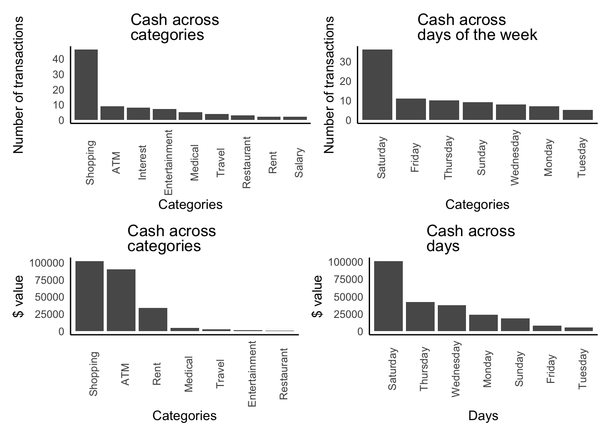

library(tidyverse)
library(janitor)
library(lubridate)
library(patchwork)
library(ggtext)
theme_set(theme_minimal())
options(scipen = 100)Cash flow - reconciliation
Cash flows - bank reconciliation
We continue with our series for “nerdy” accountants who want to diverge from Excel and master the power and beauty of R automation - and we are looking at one of the most important areas of ANY business! Cash!
Cash management is a really critical issue for both business owners and people like me who are trying not to look at recent interest rates jumps.
Cash management includes cash collection, handling, and usage of cash (spending!). It is essential to have enough cash to cover immediate expenses, fund business growth and have working capital. Or in simple terms, you need to have enough cash to pay for your coffee, cover your morgage repayment and invest in that Tesla Model 3
Cash analysis is an important step to assess companies short-term liquidity, evaluate working capital and make decisions about investments.
Today, we are going to have a look at the step that comes before cash flow visualization. Much much earlier…. Before we are able to put cash flow items on a nice graph, we need to obtain those cash flow items “somehow”.
Accountants don’t have cash flow data by default, and there is no magic way to get it. Rather, it is necessary to go transaction by transaction, classify items, group them, collate them, and double-check that they actually occurred! We need to make sure that we are not double-charged as well as we are not underpaying or omitting any of our payments and they are all included in the list.
We start backwards from this very list and we dig into doing bank reconciliation and in particular, looking at our (business) bank statement. This is indeed a very useful exercise, not only in regards to your business but also for your own expense management.
For this post, we will work through a very simple example, just looking at a bank statement and poking around. It is a “personal” bank statement that comes from Kaggle
cf<-read_csv("data/bank_st.csv")
cf%>%head()# A tibble: 6 × 7
Date Day Type Category `Debit Amount` `Credit Amount` `Closing Balan…`
<chr> <chr> <chr> <chr> <dbl> <dbl> <dbl>
1 1/8/2018 Wedne… Debit Shopping 2500 0 174656.
2 1/8/2018 Wedne… Debit Shopping 324 0 174332.
3 2/8/2018 Thurs… None None 0 0 174332.
4 3/8/2018 Friday Debit Shopping 404. 0 173928.
5 4/8/2018 Satur… Debit Shopping 100 0 173828.
6 4/8/2018 Satur… Debit Shopping 1395 0 172433.This is a typical bank statement you can view in your bank account where each row is a transaction for a particular reporting period (e.g. month). We do not have the name of the second party for the transactions (e.g. the name of the store or the company that credited/debited the account), but all transactions have been classified - which can be seen under Category.
The dataset has Debit Amount, which is when you were charged, and Credit Amount, which is when you were paid. The Closing Balance is a running balance that shows the amount of cash in your account after the transaction. The most important parts of that Closing Balance are the initial and final numbers and they are used to reconcial (= match) balances in your own “books” (accounting books!= accounting records). If those number do not match, we investigate individual closing balances for the transactions to identify where we were overpaid or underpaid.
Let’s look closer at the data: it is not messy, but not ideal…
Column names have blanks and they do not play well in functions, so let’s use clean_names() from janitor package to make them more R friendly
cf<-cf%>%
clean_names()
cf%>%head()# A tibble: 6 × 7
date day type category debit_amount credit_amount closing_balance
<chr> <chr> <chr> <chr> <dbl> <dbl> <dbl>
1 1/8/2018 Wednesday Debit Shopping 2500 0 174656.
2 1/8/2018 Wednesday Debit Shopping 324 0 174332.
3 2/8/2018 Thursday None None 0 0 174332.
4 3/8/2018 Friday Debit Shopping 404. 0 173928.
5 4/8/2018 Saturday Debit Shopping 100 0 173828.
6 4/8/2018 Saturday Debit Shopping 1395 0 172433.That’s better! so now all variables are in small letters and have snake_case!
names(cf)[1] "date" "day" "type" "category"
[5] "debit_amount" "credit_amount" "closing_balance"Let’s explore the data and do some simple counting - yes, we love to count!
First, what is the closing balance and how it changes during the month
But before we do so, let’s have a close look at the date column. In the first twenty rows you cans see there are a few issues as some dates include single vs double for days and two-digit vs four-digit for year. It is also in a string format.
class(cf$date)[1] "character"cf$date[1:20] [1] "1/8/2018" "1/8/2018" "2/8/2018" "3/8/2018" "4/8/2018" "4/8/2018"
[7] "4/8/2018" "4/8/2018" "4/8/2018" "5/8/2018" "6/8/2018" "6/8/2018"
[13] "7/8/2018" "8/8/2018" "9/8/2018" "10/8/2018" "10/8/2018" "11/8/2018"
[19] "11/8/2018" "11/8/2018"To fix this, let’s convert to the date type and fix the formating with lubridate package
cf$date<-dmy(cf$date)Now, let’s see the spend per each billing date. We exclude the days with no spend:
cf%>%
group_by(date)%>%
summarise(spend=sum(debit_amount))%>%
filter(spend!=0)%>%
ggplot(aes(date, spend))+
geom_line()
Now, let’s see type of categories we have
cf%>%count(category, sort=TRUE)# A tibble: 10 × 2
category n
<chr> <int>
1 Shopping 46
2 None 21
3 ATM 9
4 Interest 8
5 Entertainment 7
6 Medical 5
7 Travel 4
8 Restaurant 3
9 Rent 2
10 Salary 2This None category does not look right…. What is it there…
cf%>% filter(category=="None")%>%
head()# A tibble: 6 × 7
date day type category debit_amount credit_amount closing_balance
<date> <chr> <chr> <chr> <dbl> <dbl> <dbl>
1 2018-08-02 Thursday None None 0 0 174332.
2 2018-08-05 Sunday None None 0 0 162098.
3 2018-08-08 Wednesday None None 0 0 158597.
4 2018-08-21 Tuesday None None 0 0 91343.
5 2018-08-24 Friday None None 0 0 61755.
6 2018-08-26 Sunday None None 0 0 38441.It looks like the majority of these entries are not really transactions, but a closing balance. Do we need to include them? Probably not. Let’s confirm that they are not transactions and have debit_amount and credit_amount as zero
cf%>% filter(category=="None")%>%
filter(debit_amount!=0 | credit_amount!=0)# A tibble: 0 × 7
# … with 7 variables: date <date>, day <chr>, type <chr>, category <chr>,
# debit_amount <dbl>, credit_amount <dbl>, closing_balance <dbl>and it is a good idea to exclude them
cf<-cf%>%filter(category!="None")Let’s see which day has the most number of transactions and which category is the most used one (what is the money drainer!):
cf%>%count(day, sort=TRUE)# A tibble: 7 × 2
day n
<chr> <int>
1 Saturday 36
2 Friday 11
3 Thursday 10
4 Sunday 9
5 Wednesday 8
6 Monday 7
7 Tuesday 5cf%>%count(category, sort=TRUE)# A tibble: 9 × 2
category n
<chr> <int>
1 Shopping 46
2 ATM 9
3 Interest 8
4 Entertainment 7
5 Medical 5
6 Travel 4
7 Restaurant 3
8 Rent 2
9 Salary 2Well, good, but does not look nice.. So let’s “paint it”. (We look at spending where credited amount is $0 per category.)
plot4<-cf%>%filter(credit_amount==0)%>%
group_by(day)%>%
summarise(day_spend=sum(debit_amount),
n=n())%>%
ggplot(aes(x=fct_reorder(day, desc(day_spend)),
y=day_spend))+
geom_col()+
labs(x = "Days", y = "$ value",
title ="Cash across days")+
theme(
panel.border = element_blank(),
panel.grid.major = element_blank(),
panel.grid.minor = element_blank(),
axis.line = element_line(colour = "black"),
axis.text.x = element_text(angle = 90),
plot.title = element_textbox(hjust = 0.5,
width = unit(0.5, "npc"),
margin = margin(b = 15)) )
(plot1|plot2)/(plot3|plot4)
For a real business, this amount of Saturday transactions would raise a red flag, but - this data is from personal records, so looks like someone is having a blast off after a busy week :)
Also, with category that None does not sound right…. it is the second highest so… I would really investigate what sort of None is that None…
Well, what are out total earn and which days we are paid and what for?
cf%>%filter(credit_amount>0)%>%
count(category)# A tibble: 2 × 2
category n
<chr> <int>
1 Interest 8
2 Salary 2It looks like we have only two major category - interest and salary. Let’s see what brings more money
cf%>%filter(credit_amount>0)%>%
group_by(category)%>%
summarise(category_total=sum(credit_amount))# A tibble: 2 × 2
category category_total
<chr> <dbl>
1 Interest 4050.
2 Salary 500508 Well, it is still salary! but would be sooo good if it is our passive income that drives the cash flows!
Let’s see the balance for the month…
balance<-sum(cf$credit_amount)-sum(cf$debit_amount)
balance[1] 268715.5Woohoo! Our balance is positive, so we managed to grow our wealth!
Indeed, it is a very simple example, but a good foundation to start your R experience in accounting! ….
References
https://www.kaggle.com/datasets/sandhaya4u/august-bank-statement-sandhaya